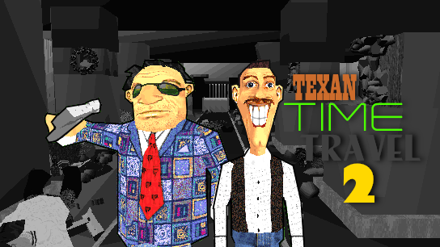
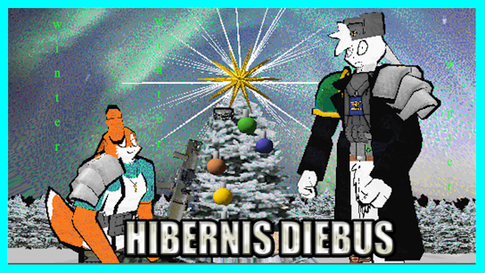

| Movie Name |
Synopsis |
Director |
Thumbnail/Watch |
| Plop Town |
North of the border, Plopilpy must navigate the complex worlds of adolescence, internet popularity, and Québécois sovereignty.
|
Old Rivers |
|
| Texan Time-Travel 2 |
Starting off right after TTT1, Oden and Owen find themselves in constant warfare as they can't catch a break. |
Pokerman |
 |
| Sgt. Steve: The Movie |
The story of a mentally retarded talk show drill seargent and his bizarre life involving romance, violence, manipulation, and 'Saved by the Bell' episodes. |
Jason Ruiz |
 |
| Hibernis Diebus |
A NEW BEGINNING FOR A NEW YEAR! |
Pvt Sherman |
 |
| Plop Town 3: Plop Sprow |
Plop gets a visit from Jon Sprow when all of a sudden he shows a scary picture! |
Patryk "Jim" Kornatowski |
|
| Cataclysmic Contentment |
The unfinished sequel to Diabolical Delightment. |
Will Maltby |
|
| Diabolical Delightment (Deleted Scenes) |
A collection of cut scenes from Diabolical Delightment. |
Will Maltby |
 |
| Jackson |
A movie following the story of a single $20 bill as it's exchanged between various people. |
Jason Ruiz |
 |
| Michael in Mexico 2 |
Another pointless action movie in mexico, however this time with a tiny bit of plot. |
Michael Sanford |
 |
| Chain Of Events |
The epic story of one man's quest to get to the bus stop, and everything else that happens around him. |
Directed By: 12 People |
 |
| Replay |
When an unidentified building is unexpectedly demolished, Detective Peterson investigates the death of one of the visitors. |
Ramza Brave |
 |
| KRB Revival |
After their movie fails at the Box Office, Bown and Doughboy exact their revenge on the community...by KILLING RAMZA BRAVE.
Meanwhile, Ramza, none too pleased with his negative portrayal in KRB, sets out to kick some arses. |
Pogo |
 |
| Aaarnishoz 2 |
The unfinished sequel to Aaarnishoz. |
Ben Wheele |
 |
| The DVD's |
based loosely on the 3dmm DVD scandal |
Dave Miles |
 |
| Doom |
In the near future, overpopulation plagues the Earth. Mars is colonized and is soon home to half of Earth's citizens.
However, civil war soon breaks out. Two of Earth's most noteworthy representatives are sent to Mars in attempt to reconcile the problem. |
JP |
 |
| Mom's Injured and Dad's in Intensive Care |
Frank's parents go on a cruise. As you can tell by the title, the trip ends up much worse than Frank would have guessed. |
Tuna Hematoma |
 |
| Dragon in America |
Jackie Chan gets mixed up with a criminal operation involving stolen diamonds, resulting in the kidnapping of his girlfriend. |
Intel Artists (Phil Pupa) |
 |
| Retrospection |
A story told by a recently dead young man who goes back an retrospects the last day of his life trying to figure out why he died at such a young age. He must examine his life, his friends and figure out how it all went wrong. |
Qaz |
 |
| Killing Ramza Brave |
The classic by the best 3dmm directors in the world, Tom Bown and Doughboy.
After Ramza Brave releases one bad movie too far, Bown and Doughboy, the BADDEST MOTHERFUCKERS IN THE UNIVERSE, make it their mission to exterminate him. |
Bown, Doughboy |
 |
| Executions and Suicides |
A simple film depicting various gruesome deaths and murders. Really, really morbid honestly. |
Nathan Urquhart |
 |
| Pointless Action Movie |
A man must fight a variety of enemies, ranging from bagheads to SWAT officers. |
Nick The Almighty |
 |
| Wouldn't It Be: EASTER SPECIAL |
Professor Spaz wants to interview the easter bunny, yet Prof. Spaz finds out something tragic happened to him! |
Professor Spaz |
 |
| Who Goes There? |
Scientists at an Antarctic camp are terrorized by a shapeshifting menace. |
Star-Shaun |
 |
| The Amazingly Pointless Adventures of Gustave |
Gustave breaks out of prison and kills a few guards. |
BR |
 |
| Eggs & Bacon Compilation |
A strange compilation of movies based on the hate we have for a particular woman in some washing up liquid ad.
People unfamiliar to this old ad simply won't get it, although Gustave's generic presence shines through. |
Will Maltby |
 |
| Steamed Hams |
Skinner becomes a bad liar while Chalmers go insane over hamburgers. |
Onattien |
 |
| Black Hole Sun |
It's the end of the world as we know it. |
Leslie "Lizard" Wai |
 |
| 00Dee Boned: You Only Live Until You Die |
00Dee Boned must wash X12's laundry before it explodes. |
Cowtacular Spleen |
 |
| Scientifically Proven |
Jim, who has been struggling with obesity, suddenly finds himself at his ideal weight. |
Jesterfoot |
 |
| The Bumbler |
Claudia tries to buy a totem pole but suddenly the Bumbler appears out of nowhere and chases her. What will she do? |
Gavin Owers |
 |
| The Handsome Man in Japan |
Dan follows his rather bothersome college pal to Japan to give them what for. |
Dominator Dan |
 |
| Time Travel |
Timmy tells his Grandfather about his latest invention;
a fully-functioning Time Machine. Together they travel to England in the year 1432, and redefine History's expectations of what a human can do. |
Cubert |
 |
| Liquid Sunshine |
A man awakes from a coma and revisits his few childhood memories to decide if his life was worth living. |
Jon Barton |
 |
| Action: Ready To Eat |
Sarah Coma's mission to infiltrate the World Finances Center fails,
because she accidentally blows up the building by flying her plane right into it after parachuting out. Hilarity and ACTION ensues. |
Eukos |
 |
| Identity |
A spaceship becomes the haunting ground for a hostile alien. |
Owtzain |
 |
| Nuclear Dawn |
The balance between nuclear holocast and the survival of the free world hangs on the shoulders of one man |
Spencer and Evan |
 |
| Pimp Lando 1: A Pimp On Wall Street |
Pimp Lando goes to the local Kwik Kiwi store (not named in film) to purchase himself a donut ". . . from you!" The shopkeeper warns him about the cursed nature of the donut,
but Murphy's Law prevails and Lando must find a way out of his predicament, with help from the Evil Guitarist and Dow Jones! |
Totally Pimpin' Productions |
 |
| Johnny Samsinite |
Johnny Samsinite wants to be a writer but the communist government won't let him. |
Jason Ruiz |
 |